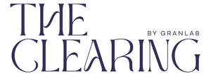

Trade Mark Journal No.2025/030 25 July 2025
UK00004200045 7 May 2025 (41,44)
Mark 1

Mark 2
- Class 41
- Education and training relating to skin diseases and conditions; education and training relating to nutrition and diet; conducting educational support programmes for patients; conducting educational support programmes for patients with skin conditions; education and training relating to charities and fundraising; provision of club and drop-in centre facilities and services; organisation of events relating to charitable promotions; providing online publications, namely, questionnaires for symptom monitoring, diagnosis, and treatment of diseases and conditions affecting the skin; advisory and information services relating to all the aforesaid services.
- Class 44
- Medical advisory services; providing medical advice in the field of dermatology; providing medical information in the field of dermatology; health centre services; individual and group psychology services; physical and mental health care services; care and support services; organisation of support groups; facilitation of self-help groups; provision of “drop-in” centres; provision of advice concerning diagnosis, prevention, alleviation and treatment of diseases and conditions affecting the skin; advisory services relating to skin diseases; dermatological services for treating skin conditions; dietary and nutritional guidance and advice; medical dietary counselling services; dietary and nutritional advice relating to the alleviation, prevention and treatment of skin diseases and skin conditions; nutrition counselling rendered using artificial intelligence; providing a website featuring information on health and nutrition; providing health, lifestyle and nutrition services, namely, personal assessments, personalized routines, maintenance schedules, and counselling; provision of advice concerning diagnosis, treatment and management of diseases and conditions affecting the skin, using AI-powered tools [for skin analysis and creating personalised treatment plans]; health assessment services using artificial intelligence [including the analysis of images or patient data]; remote monitoring of medical data for medical diagnosis and treatment; advisory services relating to skin diseases and conditions rendered using artificial intelligence; providing an on-line computer database featuring information regarding health and nutrition; health care services, namely, providing a database in the field of psoriasis information and featuring inputting and collection of data and information all for treatment and diagnostic purposes; provision of information, advice, and consultancy services relating to all the aforesaid services.
Gran Lab Limited
Representative: Kilburn & Strode LLP